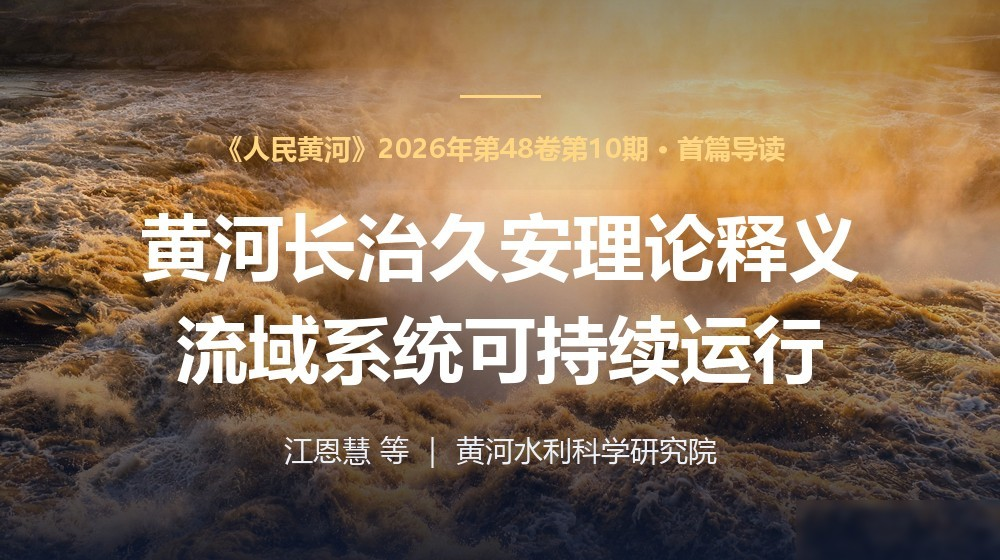

黄河长治久安的科学内涵，就是黄河流域系统的可持续运行。
—— 本文核心论断论文把"长治久安"从一句战略口号，变成了一个可描述、可评价、可优化、可调控的系统科学问题：用"行洪输沙—生态环境—社会经济"三大子系统的功效函数与协同偏离角，给黄河的健康打分、开药方。
构建流域复合系统可持续运行功效函数 H = f(F, D) | L，在三维功效空间中以偏离角 θ 刻画三大子系统的协同程度——θ 越小，系统越协调；并配套"139+"指标体系，让评价落地。
黄河水量统一调度、小浪底投运、调水调沙制度化、生态保护和高质量发展上升为国家战略，是可持续运行水平跃升的关键节点。当前系统短板已转变为行洪输沙能力相对偏弱。
对 2025—2060 年黄河下游的情景预测表明，节水效率、碳排放情景、水沙组合是决定河流系统可持续运行的关键因素。
下游滩槽协同治理：识别出花园口年均流量（>1058 m³/s）与河道控导工程密度（>0.72）两个主控因子；并提出"广义黄河流域系统"视角，把南水北调西线受水区、石羊河、永定河等纳入黄河治理版图。
单纯依靠来水量增加或河道功能改善，难以保障河流系统长期可持续运行。必须把节水效率提升、生态用水保障、水沙调控、产业结构优化作为整体，协同推进——这正是黄河长治久安从愿景走向实践的路径。